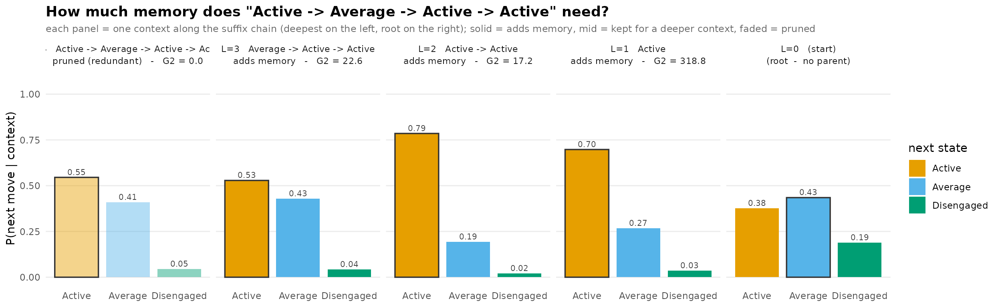

Smoothing and pruning
Written by Mohammed Saqr and Sonsoles López-Pernas
Source:vignettes/articles/smoothing-and-pruning.Rmd
smoothing-and-pruning.RmdA prediction suffix tree estimates a next-state distribution for every context it keeps, and two decisions shape these estimates. The first is how to treat states that never followed a context in the data. The maximum likelihood estimate gives them probability zero, and a single such transition in new data then makes the likelihood of the whole sequence zero. Smoothing moves a small amount of probability to the unobserved states, either toward the uniform distribution or toward the distribution of the shorter context. The second decision is which contexts to keep. A tree grown to a fixed depth holds every history observed often enough, including many whose next-state distribution is indistinguishable from that of their parent; pruning removes them, so that the tree is as deep as the data require and no deeper (Ron, Singer, & Tishby, 1996; Bühlmann & Wyner, 1999).
This guide states the five smoothers and the four pruning criteria as they are implemented, shows their effect on one context and on the whole tree, and draws the pruning decision along one pathway. The selection of the smoother, depth and pruning by cross-validation is covered in model selection.
Data
The examples use trajectories, the engagement states of
138 learners over 15 time steps.
- Sequence: each row is one learner, read from left to right; two rows contain no observed state, which leaves 136 sequences.
-
States:
Active,AverageandDisengaged. -
Missing cells: trailing
NAs mark the end of a learner’s record and are dropped.
The tree is grown to depth 4, with a node for every context observed at least five times.
tree <- context_tree(trajectories, max_depth = 4, min_count = 5)
n_nodes(tree)
#> [1] 82
model_fit(tree)
#> logLik df nobs AIC BIC perplexity
#> 1 -1438 164 1870 3204 4111 2.16The unpruned tree holds 82 contexts and is estimated from 1,870 observations.
Notation
For a context and a state of the alphabet , is the number of times followed , , and is the maximum likelihood estimate. is the parent of , the context with its oldest state removed; the parent of a single state is the root, and the root has no parent. is a smoothed distribution. The back-off smoothers below use the smoothed distribution of the parent, , computed first because the tree is smoothed from the root down; at the root, the uniform distribution takes the place of the parent.
The five smoothers
Floor ("floor", the default;
ymin
,
default 0.001). With rule = "interpolate" (default), a
distribution in which every state was observed is left unchanged;
otherwise it is shifted toward the uniform distribution,
so that every unobserved state receives exactly
,
which requires
.
With rule = "cap", every probability is raised to at least
and the vector is renormalized,
.
The interpolating rule reproduces the smoothing of the PST
package (Gabadinho & Ritschard, 2016).
Laplace ("laplace"; alpha
,
default 1). A pseudo-count is added to every state:
Kneser-Ney ("kneser_ney";
discount
,
default 0.75). An absolute discount is subtracted from every count, and
the mass removed is given to the parent’s distribution:
For integer counts , where is the number of states observed after . The back-off distribution is the parent’s smoothed distribution, not the continuation counts of the original Kneser-Ney method, which the tree does not store.
Witten-Bell ("witten_bell"; no
parameter). The weight of the parent grows with the number of distinct
states observed after
,
relative to the number of observations:
Jelinek-Mercer ("jelinek_mercer";
lambda
,
default 0.5). The same interpolation with a fixed weight:
The smoother is chosen with smoothing = in
context_tree(), either by name or as a list with
parameters, for example
smoothing = list("kneser_ney", discount = 0.5).
smooth_tree() replaces the smoothing of a fitted tree
without counting again.
One context under the five smoothers
The context
Active -> Disengaged -> Active -> Active was
observed five times; its parent,
Disengaged -> Active -> Active, 15 times.
history <- "Active -> Disengaged -> Active -> Active"
parent <- "Disengaged -> Active -> Active"
subset(as.data.frame(tree), pathway %in% c(history, parent))
#> pathway depth count likely_next next_probability
#> 57 Disengaged -> Active -> Active 3 15 Active 0.667
#> 79 Active -> Disengaged -> Active -> Active 4 5 Active 0.998
#> divergence changes_prediction
#> 57 0.0771 FALSE
#> 79 0.5668 FALSEThe maximum likelihood estimate is obtained with a floor of zero. All
five observations of the context were followed by
Active.
query_pathway(smooth_tree(tree, list("floor", ymin = 0)), history, exact = TRUE)
#> Active Average Disengaged
#> 1 0 0
query_pathway(smooth_tree(tree, list("floor", ymin = 0)), parent, exact = TRUE)
#> Active Average Disengaged
#> 0.6667 0.2667 0.0667After the parent context, Active follows in two thirds
of the cases and Average in about a quarter. The
distributions that the smoothers assign to the longer context:
rbind(floor = query_pathway(tree, history, exact = TRUE),
floor_cap = query_pathway(smooth_tree(tree, list("floor", rule = "cap")),
history, exact = TRUE),
laplace = query_pathway(smooth_tree(tree, "laplace"), history, exact = TRUE),
kneser_ney = query_pathway(smooth_tree(tree, "kneser_ney"), history,
exact = TRUE),
witten_bell = query_pathway(smooth_tree(tree, "witten_bell"), history,
exact = TRUE),
jelinek_mercer = query_pathway(smooth_tree(tree, "jelinek_mercer"),
history, exact = TRUE))
#> Active Average Disengaged
#> floor 0.998 0.001000 0.001000
#> floor_cap 0.998 0.000998 0.000998
#> laplace 0.750 0.125000 0.125000
#> kneser_ney 0.960 0.036857 0.002933
#> witten_bell 0.948 0.042440 0.009839
#> jelinek_mercer 0.831 0.131636 0.037782The floor gives each unobserved state 0.001 and keeps
Active at 0.998; the capped floor differs only in the sixth
decimal. Laplace smoothing adds one observation to each state, which
with five observations moves a quarter of the mass away from
Active (0.75) and divides it equally between the two
unobserved states. The three back-off smoothers divide the mass in
proportion to the parent’s distribution, so Average
receives more than Disengaged. Kneser-Ney moves
of the mass to the parent, Witten-Bell
,
and Jelinek-Mercer one half, which gives Average 0.13. The
smoothers differ most where a context has few observations; for a
context observed hundreds of times they nearly agree.
Smoothing and the fit of the whole tree
compare_smoothing() fits the tree under each smoother
with the other arguments held fixed and reports the size of the tree and
its in-sample perplexity.
compare_smoothing(trajectories, max_depth = 4, min_count = 5)
#> smoothing n_nodes perplexity
#> 1 floor 82 2.16
#> 2 laplace 82 2.18
#> 3 kneser_ney 82 2.17
#> 4 witten_bell 82 2.16
#> 5 jelinek_mercer 82 2.20The number of contexts is the same under every smoother: which
contexts exist is decided by min_count, not by the
smoother. The in-sample perplexity ranges from 2.16 under the floor to
2.20 under Jelinek-Mercer. The floor stays closest to the observed
frequencies and therefore has the lowest in-sample perplexity; this is
not evidence that it predicts new sequences best. The held-out
comparison is made with tune_tree(smoothing = ), described
in model selection. Given a fitted
tree, compare_smoothing() re-smooths it without counting
again, for example after pruning.
compare_smoothing(prune_tree(tree))
#> smoothing n_nodes perplexity
#> 1 floor 25 2.24
#> 2 laplace 25 2.24
#> 3 kneser_ney 25 2.24
#> 4 witten_bell 25 2.24
#> 5 jelinek_mercer 25 2.30Smoothing is applied before pruning, and the pruning criteria compare a context with its parent through the smoothed distributions. The smoother therefore also changes how many contexts survive pruning.
smoothers <- c("floor", "laplace", "kneser_ney", "witten_bell", "jelinek_mercer")
vapply(smoothers, \(method) n_nodes(prune_tree(smooth_tree(tree, method))),
integer(1))
#> floor laplace kneser_ney witten_bell jelinek_mercer
#> 25 29 29 26 34With the default criterion, between 25 (floor) and 34 (Jelinek-Mercer) of the 82 contexts are kept. The smoothers that pull a parent toward its own parent make the parent a poorer predictor of its children, so more children pass the test.
The four pruning criteria
Pruning works on the leaves of the tree. Each leaf is compared with its parent and is removed when it fails the criterion; the parents that become leaves are tested in turn, and the procedure stops when every leaf passes. The root is never removed. With :
G2 ("G2", the default;
alpha, default 0.05). The likelihood ratio statistic of the
leaf’s counts against the parent’s smoothed distribution,
is compared with the quantile of the distribution with degrees of freedom; the leaf is kept when it exceeds it. Each leaf is tested separately, without a correction for multiple testing.
KL ("KL"; threshold,
default 0.005). The leaf is kept when the Kullback-Leibler divergence of
its smoothed distribution from the parent’s,
exceeds the threshold. The divergence is in nats; the
divergence column of the pathway tables is in bits, larger
by a factor
. The criterion does not depend on
.
AIC and BIC ("AIC",
"BIC"). Let
and
be the log likelihoods of the leaf’s observations under its own and
under its parent’s distribution. The leaf, which adds
parameters, is kept when
With the floor smoother and every state observed, equals , so AIC and BIC are likelihood ratio tests with the fixed cut-off and a cut-off that grows with the count of the context. For three states the G2 cut-off at is 5.99, the AIC cut-off 4, and the BIC cut-off exceeds 5.99 once a context has been observed more than 20 times.
Comparing the criteria
compare_pruning() prunes the tree under each criterion
and reports the number of contexts kept.
compare_pruning(tree)
#> criterion n_nodes reduction_pct
#> 1 G2 25 69.5
#> 2 KL 78 4.9
#> 3 AIC 42 48.8
#> 4 BIC 36 56.1G2 keeps 25 of the 82 contexts, BIC 36,
AIC 42 and KL 78. AIC is more lenient than the
G2 test for every context. BIC is stricter than the test for contexts
observed more than 20 times and more lenient for rarer ones, which in
this tree are numerous among the longer contexts:
with(subset(as.data.frame(tree), depth > 0),
table(depth, observed_under_20 = count < 20))
#> observed_under_20
#> depth FALSE TRUE
#> 1 3 0
#> 2 9 0
#> 3 15 10
#> 4 26 18Ten of the 25 contexts of depth 3 and 18 of the 44 of depth 4 were observed fewer than 20 times. BIC keeps several of them, and a kept leaf also keeps its parent, because only leaves are tested; the contexts that BIC keeps and G2 removes are of this kind. KL, which ignores the number of observations, keeps almost every context at its default threshold. Each criterion responds to its own parameter only.
compare_pruning(tree, alpha = 0.01, threshold = 0.05)
#> criterion n_nodes reduction_pct
#> 1 G2 21 74.4
#> 2 KL 58 29.3
#> 3 AIC 42 48.8
#> 4 BIC 36 56.1At G2 keeps 21 contexts, and a KL threshold of 0.05 nats keeps 58; AIC and BIC have no parameter and keep the same numbers as before.
Pruning along one pathway
plot_pruning() shows, for one context of the unpruned
tree, the next-state distribution of the context and of each of its
suffixes down to the root, with the G2 statistic of each against its
parent. Solid panels are informative, faded panels are pruned, and
panels of intermediate opacity are kept only because a longer context
below them is informative.
plot_pruning(tree, "Active -> Average -> Active -> Active")
After Active -> Active, the learner stays
Active with probability 0.79; adding the earlier
Average lowers it to 0.53
(),
and the G2 statistic of Active -> Active against
Active is 17.2, both above the cut-off of 5.99. Adding a
further Active at the start changes the distribution very
little (0.55 against 0.53;
to one decimal), so the four-step context is pruned and its sequences
are predicted by Average -> Active -> Active. Three
steps of memory are needed on this pathway, not four.
The pruned tree:
pruned <- prune_tree(tree, criterion = "G2", alpha = 0.05)
pruned
#> <transitiontrees> 25 nodes, depth <= 4, 3 states [pruned]
#> alphabet : Active, Average, Disengaged
#> fit on : 136 sequences, 1870 observations
#> smoothing: floor(ymin=0.001, rule=interpolate) min_count = 5
#> pruned by: G2 alpha = 0.05
#> (start) n=1870 -> Average (0.43)
#> |-- Active n=658 -> Active (0.70)
#> | |-- Active n=433 -> Active (0.79)
#> | | |-- Active n=316 -> Active (0.84)
#> | | | `-- Average n=37 -> Active (0.59)
#> | | `-- Average n=70 -> Active (0.53)
#> | `-- Average n=144 -> Active (0.50)
#> | `-- Disengaged n=12 -> Average (0.83)
#> |-- Average n=751 -> Average (0.61)
#> | |-- Active n=160 -> Average (0.52)
#> | | `-- Disengaged n=10 -> Average (0.50)
#> | |-- Average n=419 -> Average (0.68)
#> | | |-- Active n=80 -> Average (0.57)
#> | | `-- Average n=248 -> Average (0.72)
#> | | `-- Disengaged n=37 -> Average (0.70)
#> | `-- Disengaged n=122 -> Average (0.52)
#> | `-- Disengaged n=31 -> Average (0.71)
#> `-- Disengaged n=325 -> Disengaged (0.48)
#> |-- Active n=23 -> Active (0.39)
#> |-- Average n=134 -> Average (0.50)
#> | |-- Active n=17 -> Active (0.41)
#> | `-- Average n=62 -> Average (0.52)
#> | |-- Average n=32 -> Average (0.75)
#> | `-- Disengaged n=13 -> Disengaged (0.85)
#> `-- Disengaged n=139 -> Disengaged (0.68)References
Bühlmann, P., & Wyner, A. J. (1999). Variable length Markov chains. The Annals of Statistics, 27(2), 480–513. https://doi.org/10.1214/aos/1018031204
Gabadinho, A., & Ritschard, G. (2016). Analyzing state sequences with probabilistic suffix trees: The PST R package. Journal of Statistical Software, 72(3). https://doi.org/10.18637/jss.v072.i03
Ron, D., Singer, Y., & Tishby, N. (1996). The power of amnesia: Learning probabilistic automata with variable memory length. Machine Learning, 25(2–3), 117–149. https://doi.org/10.1023/A:1026490906255